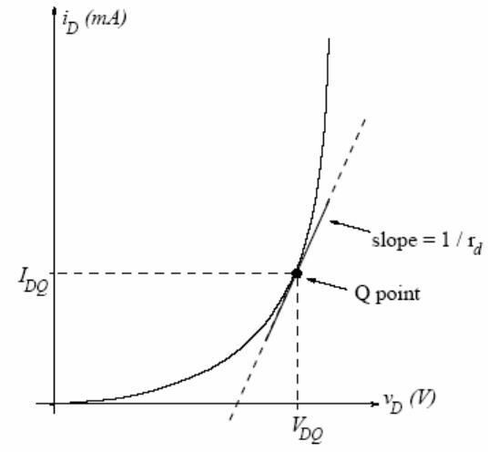
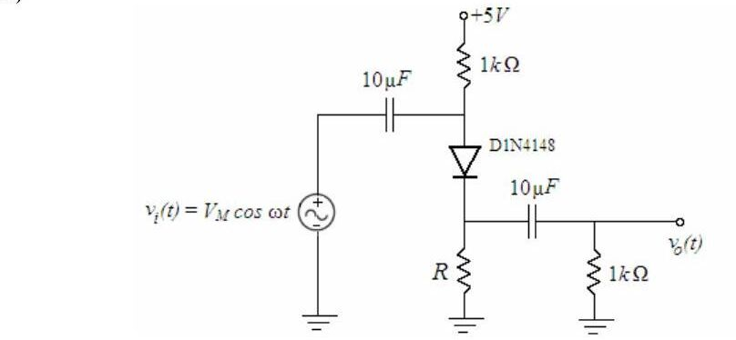

· EEM214
EEM214 Elektronik I: Deney 6 – Diyot Devrelerinin Küçük Sinyal Analizi (Föy ve Öğrenci Raporları)
EEM214 – Elektronik I · 12.02.2006 · 16.10.2026
Bu yazı, Başkent Üniversitesi EEM 214 Electronics I laboratuvarının Experiment 6: Small-Signal Analysis of Diode Circuits föyünü (Şubat 2006) ve bu deney için hazırlanmış üç öğrenci raporunu içeriyor. Raporlar arkadaşların çalışması; ad ve öğrenci numaraları kapatıldı. Föy İngilizce olduğu için metni İngilizce aktarıldı. Föyün parolasız kopyası ve raporlar yazının sonunda ZIP olarak indirilebilir. Konunun kuramı için Ders 4 – Diyot ve Diyot Modelleri yazısına da bakılabilir.
Föy: Experiment 6 – Small-Signal Analysis of Diode Circuits
Aim: The aim of this experiment is to investigate the small-signal AC model of the diode and the usage of that model in a circuit.
Theory
For a forward-biased diode the small-signal resistance is r_d = nV_T / I_DQ, where V_T is the thermal voltage, n is the ideality factor and I_DQ is the quiescent (DC) diode current. The i–v characteristic of a pn junction diode is i_D = I_S·[e^(v_D/nV_T) − 1], with 1 ≤ n ≤ 2. By definition the small-signal resistance is the inverse of the slope of this curve at the Q-point:
1/r_d = d/dv_D [I_S·(e^(v_D/nV_T) − 1)] evaluated at v_D = V_DQ = I_S·e^(V_DQ/nV_T) / nV_T ≅ I_DQ / nV_T,
since i_DQ ≅ I_S·e^(V_DQ/nV_T) for a forward-biased diode.

The small-signal AC model is a linear approximation to the exponential i–v curve around a DC operating point in the forward-bias region. It may be used if (i) the diode is biased to a DC Q-point in the forward-bias region and (ii) the AC component of the diode voltage is small relative to nV_T. The Q-point can be found numerically or with a piecewise-linear model; AC variations around it are then approximately linear and the diode can be modeled as a resistor equal to the inverse slope at the Q-point. The model begins to break down if the AC voltage across the diode exceeds nV_T; distortion due to the diode nonlinearity then becomes noticeable.
Preliminary work
1) Review Section 13.4 of the textbook.
2) In the circuit below (+5 V supply through 1 kΩ to the anode of a D1N4148, cathode to ground through R, input v_i(t) = V_M cos ωt coupled through 10 µF to the anode, output taken through 10 µF across a 1 kΩ load), perform the following for R = 3.9 kΩ and R = 56 kΩ. Coupling capacitors are short circuits at the operating frequency, v_d << nV_T, and n = 2 for the 1N4148.
- a) Find I_DQ using a piecewise-linear model with V_γ = 0.6 V and forward resistance r = 20 Ω.
- b) Determine r_d and draw the small-signal AC model.
- c) Find the output as a function of the input and the small-signal gain A_v = v_o/v_i.
- d) Approximately determine the largest input amplitude V_M for which the small-signal approximation works (v_d ≈ nV_T).
3) Design problem: Determine R so that the small-signal gain is A_v = 0.70 ± 0.03 (0.67 < A_v < 0.73), with DC diode current less than 3 mA, using standard resistor values. Simulate with PSpice (D1N4148, VSIN source): compare the DC Q-point with your design, then use time-domain analysis with V_M = 20 mV and f = 2 kHz to find the gain; increase V_M up to 500 mV and comment.
4) Read the experimental work.

Experimental work
1) Construct the circuit with R = 3.9 kΩ (electrolytic capacitors, positive terminal toward the DC supply). Set the generator to 2 kHz sine, 100 mV peak-to-peak (V_M = 50 mV); use normal triggering and adjust the trigger level carefully.
- a) With the generator off, measure the DC drop across the 1 kΩ resistor connected to the supply; find I_DQ and check the bias. Measure V_DQ.
- b) With the generator on, record input and output on two channels and measure the gain; compare with the preliminary work.
- c) Increase V_M until distortion appears at the output and note V_M.
- d) Return to V_M = 50 mV, use XY mode to record the input–output graph, and increase the input to see where the linear approximation breaks down.
2) Repeat part 1 for R = 56 kΩ and compare.
3) Repeat for the designed R (V_M = 20 mV). Does the circuit meet A_v = 0.70 ± 0.03? If not, redesign. Then increase the input to 1 V peak-to-peak (V_M = 500 mV) and compare the output with PSpice.
Components: 1N4148, 56 kΩ, 3.9 kΩ, 2 × 1 kΩ, 2 × 10 µF.
Öğrenci raporları
| Rapor A (2006) | Rapor B (2006) | 2008 raporu | |
|---|---|---|---|
| 1 kΩ üzerindeki DC düşüm, R = 3.9 kΩ | 982 mV | 0.9277 V | 30.91 mV |
| V_DQ, R = 3.9 kΩ | 606 mV | 0.6042 V | 0.615 V |
| 1 kΩ üzerindeki DC düşüm, R = 56 kΩ | 203 mV | 0.1890 V | 3.82 |
| V_DQ, R = 56 kΩ | 490 mV | 0.4901 V | 0.493 V |
| Bozulmanın başladığı V_M, R = 3.9 kΩ | 680 mV | 910 mV | 800 mV |
| Bozulmanın başladığı V_M, R = 56 kΩ | 32 mV | 176 mV | 446 mV |
Rapor A'da tasarlanan üçüncü devre için 1 kΩ üzerinde 232 mV, V_DQ = 506 mV ve bozulma başlangıcı V_M = 88 mV ölçülmüş. Rapor B'de ölçülen kazançlar: R = 3.9 kΩ için A_v = 82 mV / 100 mV = 0.82 (ön çalışmada 0.947 hesaplanmış), R = 56 kΩ için A_v = 58 mV / 100 mV = 0.58. Raporlarda giriş–çıkış dalga şekilleri ve XY modundaki v_out–v_in grafikleri çizim olarak verilmiş.
Not: Ön çalışmadaki parçalı doğrusal modelle R = 3.9 kΩ için I_DQ = (5 − 0.6) / (1 k + 3.9 k + 20) ≈ 0.89 mA, r_d = 2·25.9 mV / 0.89 mA ≈ 58 Ω ve A_v = (R ∥ 1 k) / (r_d + R ∥ 1 k) ≈ 796 / 854 ≈ 0.93 bulunur. R = 56 kΩ için I_DQ ≈ 0.077 mA, r_d ≈ 670 Ω ve A_v ≈ 0.59 çıkar; ölçülen 0.58 ile uyumludur. 2008 raporundaki 30.91 mV değeri (0.031 mA'e karşılık gelir) beklenen yaklaşık 0.9 mA ile uyuşmuyor, birim ya da ölçüm hatası olabilir.
İndirme
ZIP dosyasında föyün parolası kaldırılmış PDF'i (Experiment6.pdf) ve üç raporun kişisel bilgileri kapatılmış PDF kopyaları bulunuyor.